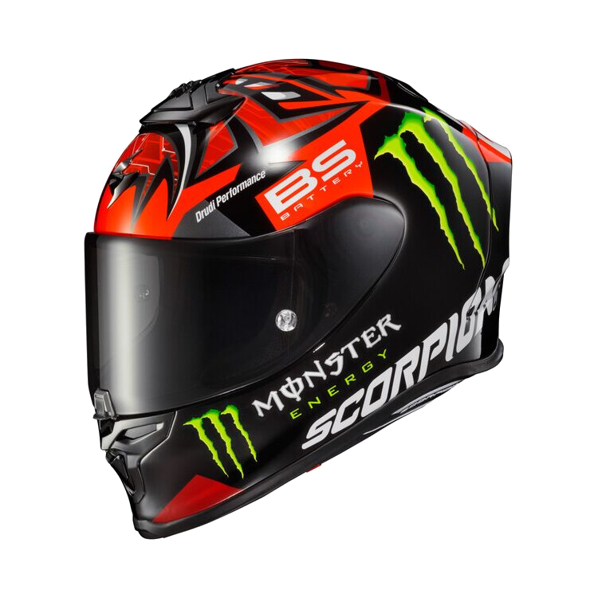

Scorpion EXO-R1 Air Quartararo Monster replika sisak
Az EXO-R1 légi sisak a Scorpion első számú pálya-specifikációs sisakjaként uralkodik. A versenypályán tesztelt és kifinomult EXO-R1 Air egy sor győztes funkciót hoz a közúti vezetés minden stílusába. Az Ultra-TCT héjjal debütáló EXO-R1 Air egyedülálló üvegszál-keveréket használ, amely nagy szilárdságot, kis súlyt és kiváló ütéseloszlást ígér. Ennek a sisaknak az alakját aerodinamikailag hangolták a csökkentett légellenállás és emelés érdekében. A Scorpion egy központi zárszerkezettel egészítette ki az arcvédőt, amely kiegészíti a szabadalmaztatott Ellip-Tec racsnis csuklópánt-rendszert – hogy garantálja a kompromisszumok nélküli tömítést még a legnagyobb sebességeknél is. A belső oldalon egy többsűrűségű EPS bélés a légáramlást irányító csatornákkal táplálja az elülső nagy levegőbeszívó nyílást, és hátul négy kipufogónyílás segíti. A Scorpion AirFit rendszere egyedülállóan testreszabott illeszkedést tesz lehetővé a jobb kényelem és a zajszigetelés érdekében. A dobozban található egy sötét füst, pinlock-kész arcvédő, valamint egy páramentesítő betét. A Quartararo a MotoGP-ben és a Bautista a World Superbike-ban viselt EXO-R1 Air készen áll kedvenc aszfaltcsíkjára.